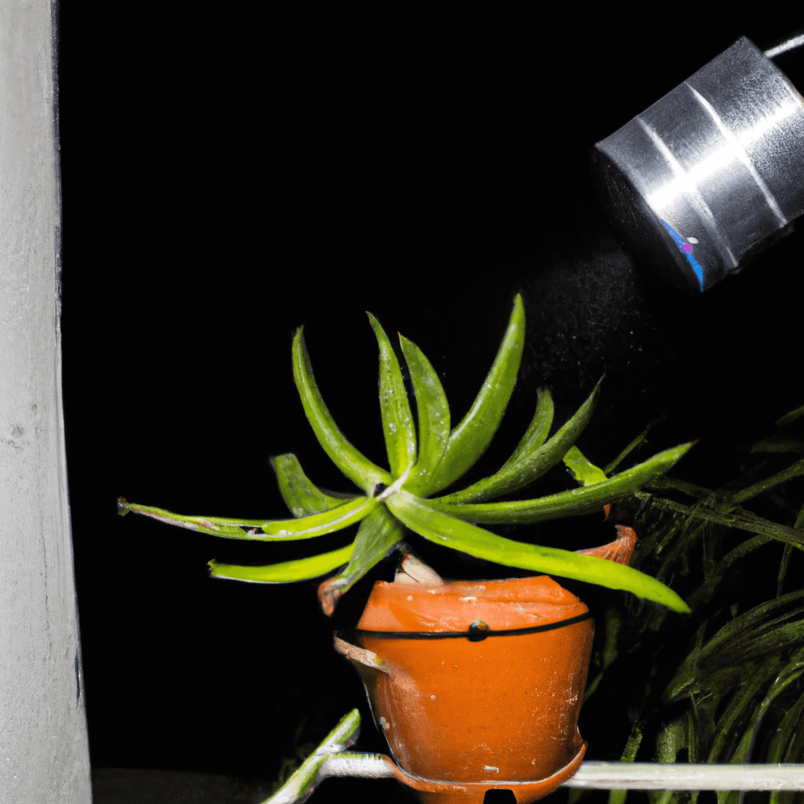

¿Qué es el cuidado del agua?
El cuidado del agua se refiere a todas las acciones y prácticas destinadas a conservar, proteger y utilizar de manera sostenible este recurso vital. Involucra la conciencia sobre el uso responsable del agua en actividades diarias, la reducción del desperdicio, la prevención de la contaminación del agua.
¿Por qué es importante?
Actualmente, más de un tercio de la población mundial vive en países con escasez de agua, en 2025 se espera que el número crezca a dos tercios, y se estima que para el año 2030, 700 millones de personas podrían ser desplazadas por una escasez intensa de agua.Además, la contaminación del agua va en aumento.
¿Cómo podemos ayudar?
SprinklerCon los grifos
- Cierra la llave mientras te cepillas los dientes.
- Lavarnos las manos también es algo que hacemos muchas veces a lo largo del día. Es importante cerrar el grifo cuando te estés enjabonando.
- Vigila el estado de los grifos de tu casa, si gotean dile a un adulto para que lo repare.

BathroomEn el baño
- Acostumbrate a bañarte en 5 minutos y cierra las llaves mientras te enjabonas.
- Cuando te bañes, coloca una cubeta para recolectar el agua fría mientras sale la caliente. Puedes utilizarla después para limpiar la casa o regar las plantas.
- Tira los papeles y desechos en el bote de basura y no en el inodoro.

FaucetEn la cocina
- No descongeles los alimentos bajo el chorro de agua, mejor llena un recipiente y sumérgelos hasta que se deshielen.
- Antes de lavar los trastes, retira los residuos de comida y deposítalos en el bote de basura orgánica, con ello evitarás desperdiciar agua al quitarlos bajo el chorro.

Directions_CarLavar el carro
Si ayudas en tu casa lavando el carro usa una cubeta y no la manguera, para no desperdiciar agua.

Potted_PlantCon las plantas
Riega el jardín al anochecer para evitar la evaporación del agua.

Cool_To_DryDesague
- No eches el aceite por el lavabo. Es uno de los productos que más contaminan el agua.
- Utiliza productos de limpieza biodegradables.

El Día Mundial del Agua se celebra anualmente el 22 de marzo como un medio para centrar la atención en la importancia del agua dulce y abogar por la gestión sostenible de los recursos de agua dulce.
lorep ipsum
Inicio